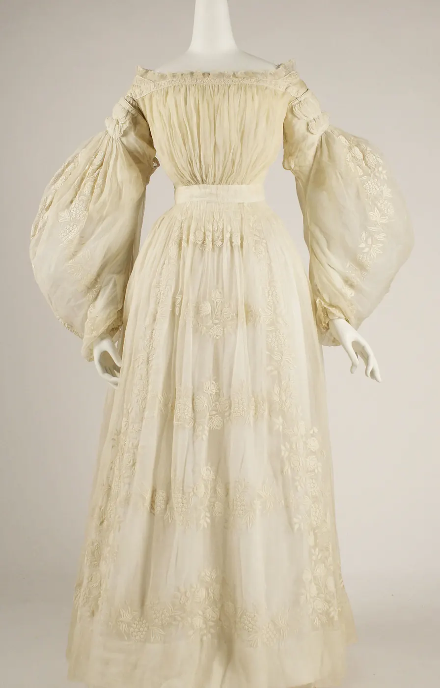
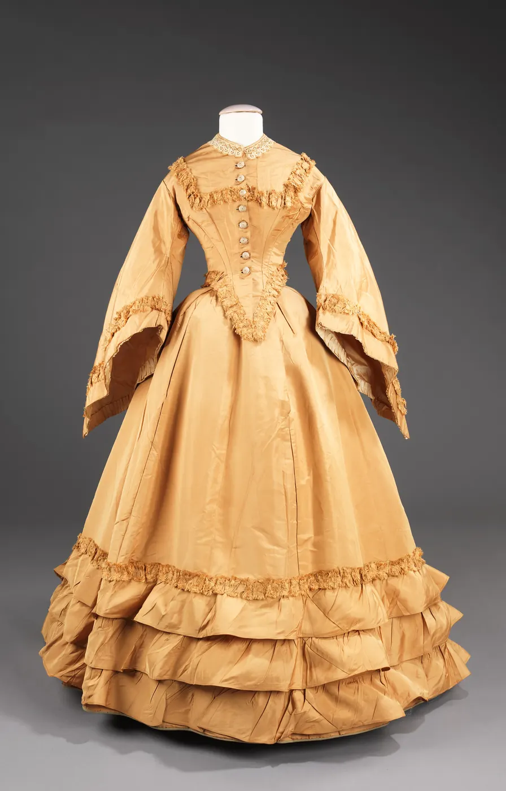

흰 옷은 기쁜 날의 옷일까, 슬픈 날의 옷일까. 오늘 한국의 결혼식장에서는 신부가 흰 드레스를 입지만, 백 년 남짓 전 이 땅에서 흰 옷은 상중(喪中)임을 알리는 옷이기도 했다. 같은 색이 시대와 장소에 따라 정반대의 뜻을 갖는다면, "빨강은 구매욕을 부른다", "초록은 마음을 편안하게 한다" 같은 말은 어디까지 믿을 수 있을까. 이 장은 색의 의미가 어디서 오는지를 따라가고, 흔히 듣는 색채 심리 주장의 근거를 하나씩 저울에 올린다.
같은 색의 의미가 시대·지역·자리에 따라 달라지는 사례(흰색, 붉은색)를 설명한다.
오방색이 방위·계절·오행과 묶인 색의 체계라는 것과, 하나로 정해진 수치가 없다는 것을 안다.
색 이름이 색을 나누는 방식(기본 색채어, 한국어의 "푸르다")이 언어마다 다르다는 것을 본다.
색채 심리 주장을 "통설·근거 약함 / 연구가 엇갈림 / 일부 근거 / 비교적 탄탄함"으로 나누어 판단한다.
디자인의 색을 통설 대신 "놓일 자리의 차이"와 "그 장소의 이야기"에서 근거를 찾아 고른다.
흰 옷은 기쁜 날의 옷인가
색의 의미를 물으면 우리는 대개 한 문장으로 답하고 싶어 한다. 흰색은 순수, 검정은 슬픔, 빨강은 열정. 그런데 이 문장들은 어느 시대, 어느 곳의 문장일까. 흰색 하나만 따라가 보아도 대답은 금방 여러 갈래로 갈라진다.
조선 시대의 상례에서 상주와 가족은 물들이지 않은 거친 베로 지은 옷을 입었고, 상중에는 흰 옷(소복)을 입는 것이 예법이었다. 지금 한국 장례식장에서 흔히 보는 검은 양복과 검은 리본은 20세기에 들어 서양식 상복 문화와 함께 널리 퍼진 것이다. 반대로 서양의 혼례에서 신부가 반드시 흰 드레스를 입는 관습도 오래된 것이 아니다. 1840년 영국 빅토리아 여왕이 흰 드레스를 입고 결혼한 일이 널리 알려진 뒤, 19세기를 거치며 흰 드레스가 신부의 옷으로 자리 잡았다는 것이 복식사의 일반적인 설명이다. 그 전에는 가진 옷 가운데 가장 좋은 옷을 입는 경우가 많았고 색도 다양했다. 중국의 전통에서 흰색은 상례의 색이고 혼례의 색은 붉은색이며, 남아시아 일부 지역의 전통에서는 흰 옷이 남편을 잃은 여성의 옷이었다.
그림 1. 흰색의 다섯 자리. 위에서부터 조선의 상례(물들이지 않은 베와 소복), 19세기 이후 서양의 혼례(흰 비단 드레스), 중국 전통의 상례, 남아시아 일부 지역 전통에서 남편을 잃은 여성의 옷, 그리고 오늘날의 병원·실험실이다. 왼쪽 견본은 같은 "흰색"이 실제로는 얼마나 다른 흰색인지 보여 주는 이 책의 예시값이다. 물들이지 않은 베는 누르스름하고, 표백한 면과 비단은 더 희다.
아래 두 벌의 드레스는 모두 19세기 중반의 웨딩드레스다. 한 벌은 흰 면, 다른 한 벌은 살구빛 비단이다. 흰 드레스가 "당연한" 신부의 옷이 되기 전, 같은 시기에도 신부의 색은 하나가 아니었다.


그림 2. 19세기 중반의 웨딩드레스 두 벌. 왼쪽은 1837년 무렵 프랑스의 흰 면 드레스, 오른쪽은 1851년 미국의 살구빛 비단 드레스다. 빅토리아 여왕의 결혼식(1840) 뒤에도 한동안 신부들은 다양한 색의 좋은 옷을 입었다. 사진의 색은 촬영 조명과 오랜 세월의 변색을 함께 담고 있고, 화면 색은 기기마다 다르다.왼쪽: 메트로폴리탄 미술관 소장(Gift of Mrs. R. T. Auchmuty, 1915), 면. 오른쪽: 메트로폴리탄 미술관 소장(Brooklyn Museum Costume Collection at The Metropolitan Museum of Art, Gift of the Brooklyn Museum, 2009; Gift of Dorothy L. Tapscott and Gladys L. Campbell, 1962), 비단. 둘 다 공공 도메인(The Met Open Access, CC0). 왼쪽 작품 페이지 · 오른쪽 작품 페이지 · 크레딧(왼쪽) · 크레딧(오른쪽)
그렇다면 색의 의미는 색 자체가 아니라 색이 놓인 자리에서 생긴다. 같은 두 색을 청첩장, 부고, 할인 배너에 똑같이 칠해 본다. 위의 단추로 색 조합을 바꾸고, 슬라이더로 강조색이 차지하는 넓이를 바꾼다.
SIMULATOR
같은 색, 다른 자리
청첩장으로 읽으면—
부고로 읽으면—
할인 배너로 읽으면—
해볼 것: ① "빨강+금"을 고른다. 청첩장과 할인 배너는 자연스럽지만 부고는 대부분의 동아시아 관습에서 크게 어긋난다. ② "흰+삼베"로 바꾼다. 같은 흰 바탕인데 누르스름한 삼베색이 더해지자 부고가 가장 자연스러워지고, 할인 배너는 주변에 묻힌다. ③ 강조색의 넓이를 100%까지 민다. 카드 전체가 한 색이 되면 어떤 조합도 "무슨 자리인지"가 흐려진다. 의미는 색 하나보다 조합과 비율, 글자에서 함께 나온다. (아래 읽기 칸의 문장은 오늘날 한국에서 흔한 관습을 이 책이 요약한 것이며, 집안·종교·지역에 따라 다르다.)
"빨강+금"의 부고가 어색하게 느껴졌다면, 그 어색함은 색의 성질이 아니라 우리가 자라며 본 장면들의 기억에서 온다. 디자인에서 색의 의미를 다룬다는 것은 "이 색은 무엇을 뜻한다"를 외우는 일이 아니라, 이 물건을 받아 들 사람이 어떤 장면들을 기억하고 있는가를 묻는 일이다. 같은 청첩장이라도 받는 사람이 누구냐에 따라 다른 기억이 깨어난다.
오방색: 방위와 계절의 색
색에 의미를 붙이는 가장 체계적인 방식 가운데 하나가 동아시아의 오방색(Obangsaek, five cardinal colors)이다. 오방색은 음양오행 사상에 따라 다섯 방위에 하나씩 짝지은 다섯 색, 곧 청(靑)·적(赤)·황(黃)·백(白)·흑(黑)을 말한다. 각 색은 방위뿐 아니라 계절, 오행의 기운, 방위를 지키는 상상의 동물(사신)과 함께 묶여 하나의 세계 질서를 이룬다.
그림 3. 오방색의 짜임. 가운데는 황(흙, 중앙), 동쪽은 청(나무, 봄, 청룡), 남쪽은 적(불, 여름, 주작), 서쪽은 백(쇠, 가을, 백호), 북쪽은 흑(물, 겨울, 현무)이다. 그림에서는 북쪽을 위에 두었다. 견본의 값은 이 책의 엔진에 넣어 둔 화면용 예시(ART.OBANG)일 뿐이고, 전통 색에는 하나로 정해진 수치가 없다. 같은 "적"이라도 안료와 염료, 시대와 유물마다 색이 다르다.
오방색은 생활 곳곳에 쓰였다. 아이의 돌이나 명절에 입히던 색동저고리의 소매, 궁궐과 절의 처마를 칠한 단청, 혼례에서 신랑·신부를 상징하는 청실과 홍실이 그 예다. 오방색 사이의 색, 곧 녹(綠)·벽(碧)·홍(紅)·자(紫)·유황(騮黃)을 오간색(Intermediate colors)이라 부르며 함께 쓰기도 했다. 오간색은 정색(正色)인 오방색과 구분되는 색들로 여겨졌다.
오방색에서 배울 점은 다섯 색의 "뜻"을 외우는 것보다, 의미가 체계 안의 자리에서 생긴다는 점이다. 청은 청 하나로 봄이 아니라, 적·황·백·흑과 마주한 동쪽의 자리에 있기 때문에 봄이 된다. 이것은 1장에서 만난 한도경의 원칙 "색은 이름이 아니라 관계다"를 문화의 차원에서 다시 보는 일이기도 하다. 수묵화와 단청이 오방색을 어떻게 썼는지는 11장에서 그림으로 본다.
"전통 색"의 수치는 하나가 아니다
인터넷에서 "오방색 HEX 코드" 같은 표를 쉽게 찾을 수 있지만, 그 값은 누군가가 고른 하나의 해석이다. 옛 색은 쪽, 홍화, 치자, 주사, 먹 같은 염료와 안료로 냈고, 같은 이름의 색도 재료의 농도, 천의 종류, 염색 횟수, 세월의 변색에 따라 크게 달랐다. 이 책이 쓰는 ART.OBANG 값도 화면 예시일 뿐이다. 전통 색을 디자인에 가져올 때는 "공식 값"을 찾기보다 참고한 유물이나 자료를 밝히고, 그 색을 왜 골랐는지를 함께 적는 편이 정직하다.
붉은색의 길상
붉은색은 동아시아에서 오랫동안 길상(Auspiciousness), 곧 좋은 일과 복을 부르고 나쁜 기운을 막는 색으로 쓰였다. 동짓날 붉은 팥죽을 쑤어 먹고 대문에 뿌리던 풍습, 붉은 주사로 쓴 부적, 혼례 때 신부의 볼과 이마에 찍던 연지·곤지가 잡귀를 물리친다는 설명과 함께 전해진다. 아이가 태어나면 대문에 거는 금줄에 붉은 고추를 끼우기도 했다. 중국에서도 설날의 붉은 대련과 세뱃돈 봉투, 혼례의 붉은 장식이 경사를 알린다.
같은 붉은색이 다른 자리에서는 전혀 다른 일을 한다. 교통 신호와 안전 표지에서 빨강은 "멈춤", "위험", "금지"를 뜻하도록 약속되어 있다. 회계에서는 손실을 붉은 글씨로 적었고, 한국과 중국의 주식 시세판은 오르는 종목을 빨강으로, 미국의 많은 시세판은 내리는 종목을 빨강으로 보여 준다. 한 사람이 하루 동안 마주치는 빨강만 해도 경사, 경고, 손실, 상승을 오간다. 어느 쪽으로 읽힐지는 색이 아니라 그 색이 놓인 장르(청첩장인가, 표지판인가, 시세판인가)가 정한다.
의미를 쓰려면 장르의 약속부터 확인한다
해외 고객과 일하는 디자이너들은 색 하나를 정하기 전에 "이 물건이 그 나라에서 어떤 장르의 물건과 나란히 놓이는가"를 먼저 조사한다. 금융 앱의 상승·하락 색, 의약품 포장의 색 띠, 선거 홍보물의 정당 색처럼 장르마다 이미 약속된 색이 있고, 그 약속을 모르고 쓰면 의미가 거꾸로 전달된다. 반대로 약속이 없는 장르(동네 서점의 로고처럼)에서는 색의 "보편적 의미"를 찾느라 시간을 쓰기보다 그 가게만의 이야기에서 색을 찾는 편이 낫다. 이 장의 마지막 시뮬레이터가 그 방법을 다룬다.
색 이름이 색을 나누는 방식
색의 의미 이전에, 색을 부르는 이름부터 언어마다 다르다. 한국어 화자는 "푸른 하늘"과 "푸른 산"을 둘 다 자연스럽게 말한다. 고유어 "푸르다"가 파랑과 초록을 함께 덮기 때문이다. 초록 신호등을 "파란불"이라고 부르는 것도 같은 흔적이다. 일본어의 "아오(青)"도 초록 신호등과 푸른 채소에 쓰인다. 한국어의 고유어 색 형용사가 희다·검다·붉다·누르다·푸르다의 다섯이라는 점도 흥미롭다. "초록(草綠)"은 한자어이고, "풀색"처럼 물건에 빗댄 이름이 함께 쓰였다.
인류학자 브렌트 벌린과 언어학자 폴 케이(Brent Berlin, Paul Kay)는 1969년의 책 『기본 색채어』(Basic Color Terms: Their Universality and Evolution)에서 여러 언어의 색 이름을 비교했다. 그들은 다른 말에서 빌리지 않고, 누구나 쓰며, 특정한 물건에 매이지 않는 짧은 이름을 기본 색채어(Basic color term)라고 부르고, 언어마다 그 수는 2개에서 11개까지 다르지만 늘어나는 순서에는 규칙이 있다고 주장했다.
단계
새로 생기는 기본 색채어(벌린과 케이의 제안)
I
밝음·따뜻함(흰색 쪽)과 어두움·차가움(검정 쪽) 두 이름
II
빨강
III–IV
초록과 노랑(어느 쪽이 먼저인지는 언어마다 다름)
V
파랑(이 단계 전에는 초록과 파랑을 한 이름으로 부르는 언어가 많다)
VI
갈색
VII
보라, 분홍, 주황, 회색
이 연구는 큰 영향을 남겼지만 비판도 많이 받았다. 처음 조사한 언어가 20개 남짓이었고 많은 경우 한 언어에 한두 명의 화자만 조사했다는 점, 영어의 색 범주를 기준 삼아 다른 언어를 재단했다는 점, 표준 색표(먼셀 색표) 위에서 고르게 하는 방식 자체가 색을 "따로 떼어 이름 붙이는" 문화를 전제한다는 점이다. 이후 110개 언어를 조사한 세계 색채 조사(World Color Survey)가 일부 규칙성을 다시 확인하면서도 단계 모형을 여러 차례 고쳤다. 지금은 "언어마다 색을 자유롭게 나누지는 않지만, 나누는 방식이 하나로 정해져 있지도 않다" 정도가 조심스러운 결론이다.
내가 가진 색 이름의 경계를 직접 그어 본다. 아래 띠는 OKLCH 색상각 100°(연두 쪽)에서 290°(남보라 쪽)까지를 같은 명도·채도로 이은 것이다. 손잡이를 끌어 "여기부터는 파랑"이라고 느끼는 자리에 놓는다.
SIMULATOR
초록과 파랑 사이, 나의 경계
경계 손잡이를 끈다
나의 경계 색상각—
경계의 색—
"초록" 칸의 폭—
해볼 것: ① 손잡이를 끌어 초록과 파랑이 갈리는 자리를 정한다. 경계 바로 옆의 색은 어느 쪽 이름으로도 어색하다. ② 명도를 0.85까지 올린다. 같은 색상각인데 밝아지면 "하늘색", "민트" 같은 다른 이름이 떠오르고, 경계를 다시 옮기고 싶어질 수 있다. 색 이름은 색상만이 아니라 명도와 채도에도 매여 있다. ③ "청록 칸"을 켜고 두 경계를 정한다. 이름이 하나 늘면 같은 띠가 세 덩어리로 보인다. 가족이나 동료에게 같은 실험을 시켜 경계가 어디서 갈리는지 비교해 본다. (이 시뮬레이터는 여러분의 선택만 보여 주고 어떤 평균값도 보여 주지 않는다. 띠는 OKLCH 채도 0.11에서 sRGB 색역 안으로 맞춘 색이며 화면 색은 기기마다 다르다.)
경계를 옮겨 보면 "초록"과 "파랑"이 띠 위에 원래 그어져 있는 선이 아니라는 것이 실감 난다. 색 이름은 연속된 색을 말이 쓸 수 있는 덩어리로 자르는 칼질이다. 그 칼질은 언어가, 그리고 같은 언어 안에서도 직업과 경험이 정한다. 물감을 오래 쓴 화가는 "초록" 하나 대신 비리디언, 샙 그린, 테르 베르트를 떠올린다. 디자이너가 팀원과 색을 이야기할 때 이름 대신 값(hex, OKLCH)을 함께 적는 이유가 여기 있다.
단어와 색의 연상
그래도 사람들이 단어와 색을 짝짓는 방식에는 어떤 공통점이 있지 않을까. 먼저 나 자신의 연상부터 본다. 아래에서 단어 하나를 고르고, 그 단어에 어울린다고 느끼는 색을 색 판 위에서 누른다. 색 판의 가로는 색상, 세로는 명도이고, 슬라이더로 채도를 바꾼다. 하나를 고르면 다음 단어로 넘어간다.
SIMULATOR
내가 고른 단어의 색
색 판을 누른다
지금 단어 · 고른 색—
고른 단어 수—
서로 비슷한 내 선택—
해볼 것: ① 여덟 단어를 모두 고른다. 아래 줄에 나만의 "단어 팔레트"가 생긴다. ② 채도를 0까지 내린 채로 "슬픔"과 "고급"을 다시 고른다. 회색만으로도 두 단어가 명도로 갈리는지 본다. ③ "서로 비슷한 내 선택" 칸을 본다. 예를 들어 "위험"과 "설렘"을 비슷한 빨강으로 골랐다면, 같은 색이 정반대의 감정과 묶일 수 있다는 뜻이다. (이 책은 설문을 하지 않았으므로 다른 사람의 평균을 보여 주지 않는다. 고른 색은 이 페이지를 닫으면 사라지고 어디에도 저장되지 않는다. "비슷하다"는 색차 ΔE2000이 12 미만인 경우다.)
여러 나라의 사람들에게 같은 질문을 던진 연구들이 있다. 예를 들어 요나우스카이테와 동료들(Jonauskaite et al., 2020, Psychological Science)은 30개 나라 참가자의 색–감정 연상을 비교해, 빨강과 분노·사랑, 검정과 슬픔처럼 여러 나라에서 비슷하게 나타나는 짝이 있는 한편, 그 강도와 세부는 언어와 지리적 거리에 따라 달라진다고 보고했다. "보편적인 경향"과 "문화의 차이"가 둘 다 있다는 것이다. 그리고 연상이 있다는 것은 "그 색을 보면 그 감정이 생긴다"는 뜻이 아니다. 빨강을 "위험"과 짝지을 수 있다고 해서 빨간 간판이 사람을 불안하게 만든다는 증거가 되지는 않는다.
색의 선호도 비슷하다. 여러 나라의 조사에서 파랑 계열이 가장 좋아하는 색으로 자주 꼽히지만, 그 정도는 조사 방법과 나이, 지역에 따라 다르다. 영국의 헐버트와 링(Hurlbert & Ling, 2007)은 영국인과 중국인 참가자 모두 푸른 계열을 선호하는 경향을 보였고 여성은 그보다 붉은 쪽으로 조금 기우는 경향이 있었다고 보고했다. 팔머와 슐로스(Palmer & Schloss, 2010)는 이런 선호를 설명하는 생태적 정서가 이론(Ecological valence theory)을 내놓았다. 사람은 어떤 색과 연결된 물건들(맑은 하늘과 물, 또는 썩은 음식)에 대한 좋고 싫은 느낌을 평균하여 그 색을 좋아하거나 싫어하게 된다는 것이다.
\(c\): 어떤 색, \(o\): 그 색에서 떠오르는 물건(사람들이 직접 적은 목록), \(v_o\): 그 물건을 얼마나 좋아하는가(정서가), \(w_{co}\): 그 물건의 색이 색 \(c\)와 얼마나 닮았는가, \(n\): 물건의 수. 팔머와 슐로스는 이 "가중 정서가 추정치(WAVE)"가 미국 대학생 참가자들의 색 선호를 상당 부분 설명한다고 보고했다. 이 식의 핵심은 선호가 색 자체가 아니라 그 색과 묶인 경험에서 온다는 것이고, 따라서 경험이 다른 사람과 문화에서는 선호도 달라질 수 있다는 예측을 함께 담고 있다.
이 이론에 따르면 서점의 색을 고를 때 물어야 할 것도 달라진다. "사람들이 좋아하는 색은 무엇인가"보다 "우리 손님들이 이 가게와 함께 기억할 물건은 무엇이고, 그 물건은 무슨 색인가"가 더 쓸모 있는 질문이 된다.
색채 심리 주장, 근거는 어디까지인가
"빨강은 식욕을 돋운다", "파랑은 신뢰를 준다", "초록은 눈과 마음을 편안하게 한다". 디자인 책과 마케팅 글에 자주 나오는 문장들이다. 이런 문장을 들으면 바로 믿거나 바로 무시하지 말고, 근거가 어느 수준인지 물어볼 수 있다. 이 책은 아래 네 단계로 나누어 판단한다.
그림 4. 근거 수준의 네 단계. 아래에서 위로 갈수록 근거가 단단하다. 이 구분은 정식 체계적 문헌 검토가 아니라 이 책이 판단을 정리하기 위해 쓰는 거친 눈금이다. 각 단계 오른쪽의 질문은 어떤 주장을 만났을 때 스스로 물어볼 것들이다. 가장 중요한 질문은 맨 위의 것, "그 효과가 내가 쓰려는 자리에서도 일어나는가"다.
아래의 카드들은 흔히 듣는 주장 아홉 개를 이 눈금에 올린 것이다. 단추로 주장을 바꿔 가며 판단과 그 이유를 읽는다. 판단은 이 책 집필 시점(2026년)의 연구 흐름에 대한 요약이며, 새로운 연구가 나오면 바뀔 수 있다.
SIMULATOR
통설 검사기
이 책의 판단—
근거의 종류—
디자인에 쓸 때—
해볼 것: ① "빨강·식욕"과 "빨강·승리"를 비교한다. 둘 다 빨강의 힘을 말하지만 하나는 연구 자체가 드물고, 다른 하나는 유명한 연구가 있었으나 뒤의 분석에서 엇갈렸다. ② "다른 색·눈에 띔"과 "푸른빛·수면"을 본다. 근거가 비교적 탄탄한 주장들은 "빨강" 같은 특정 색이 아니라 차이나 빛에 대한 이야기다. ③ "파랑 선호"와 "파랑·신뢰"를 비교한다. 많은 사람이 파랑을 좋아한다는 것과 파랑이 신뢰를 만든다는 것은 전혀 다른 주장이다. (근거 수준은 이 책의 판단이며 정식 메타분석이 아니다.)
카드를 넘겨 보면 하나의 패턴이 보인다. 색채 심리 주장 가운데 근거가 단단한 것은 대체로 특정 색의 "효과"가 아니라 지각의 일반 원리에 관한 것이다. 주변과 다른 것이 먼저 보인다, 밤의 짧은 파장 빛은 몸의 시계에 영향을 준다. 반대로 "빨강은 무엇을 일으킨다"처럼 색 하나에 감정이나 행동을 붙이는 주장은 연구가 드물거나, 처음의 결과가 반복 연구에서 작아지거나 사라진 경우가 많다. 심리학 전반에서 2010년대에 진행된 대규모 반복 연구 운동이 이런 주장들을 다시 보게 만들었다.
왜 색채 심리 연구는 반복이 어려운가
색 실험은 생각보다 통제하기 어렵다. 화면이나 인쇄물의 실제 색은 기기와 조명에 따라 달라지고, "빨강"과 "초록"을 비교하는 실험은 흔히 명도와 채도까지 함께 바꿔 버린다. 그러면 결과가 색상 때문인지, 밝기나 선명함 때문인지 가릴 수 없다. 참가자 수가 적은 실험에서 우연히 큰 효과가 나오면 그 결과가 먼저 출판되고, 이후의 큰 실험에서 효과가 작아지는 일도 흔하다. 그래서 색채 연구를 읽을 때는 ① 비교한 색들의 명도·채도가 맞춰져 있는가, ② 참가자가 충분히 많았는가, ③ 다른 연구진이 다른 사람들로 반복했는가를 확인한다.
눈에 띄는 것은 빨강이 아니라 차이다
통설 검사기에서 비교적 근거가 탄탄했던 주장, "주변과 다른 색은 눈에 먼저 띈다"를 직접 본다. 시각 탐색 연구에서는 오래전부터, 목표물이 주변 물건들과 한 가지 특징(색, 기울기, 크기)에서 크게 다르면 주변 물건이 많아도 거의 곧바로 찾아진다는 것을 보여 왔다. 트라이스먼과 겔레이드(Treisman & Gelade, 1980)의 특징 통합 이론(Feature integration theory)이 이런 "튀어나옴"(Pop-out) 현상을 설명하는 고전적인 이론이다. 중요한 것은 목표물이 무슨 색인가보다 주변과 얼마나 다른가다.
아래는 서점 서가에 붙인 "행사" 스티커다. 색상과 명도 슬라이더로 스티커 색을 바꾸고, 배경을 나무 서가, 흰 벽, 초록 벽으로 바꿔 본다. 시뮬레이터 오른쪽 위의 "흑백" 단추로 명도만 남겨 보는 것도 잊지 않는다.
SIMULATOR
서가 위의 행사 스티커
스티커 색—
바탕과 명도 대비—
바탕과 색차 ΔE—
가장 닮은 책등과 ΔE—
해볼 것: ① 기본값(빨강, 나무 서가)에서 흑백을 켠다. 빨간 스티커가 나무 색과 거의 같은 회색이 되어 사라진다. 이 책의 모델로 계산하면 명도 대비가 1.2 남짓이다. ② 색상은 그대로 두고 명도를 0.9 위로 올린다. 크림색에 가까워지지만 오히려 더 잘 보인다. ③ 배경을 "초록 벽"으로 바꾸고 색상을 140° 근처로 옮긴다. 초록 벽 위의 초록 스티커는 사라지고, 같은 스티커가 나무 서가 위에서는 또렷하다. 눈에 띄는 색은 정해져 있지 않고 바탕이 정한다. (색 판단은 이 책의 색차 ΔE2000과 WCAG 대비 공식으로 계산했다. 책등 색은 이 책이 정한 예시이며, 실제 매장에서는 조명과 거리도 함께 영향을 준다.)
나무 서가 위의 빨간 스티커가 흑백에서 사라지는 모습은 색채 심리 통설의 함정을 잘 보여 준다. "빨강은 눈에 띈다"는 말은 흰 종이나 회색 거리처럼 빨강과 다른 바탕을 전제할 때만 맞다. 따뜻한 나무와 크라프트지로 가득한 서점에서는 빨강이 바탕과 같은 편에 서 버린다. 이 원리는 8장의 대비, 6장의 명도 구조와 그대로 이어진다.
내 방의 "튀는 색" 찾기
색종이 다섯 장(빨강, 노랑, 초록, 파랑, 흰색)을 손바닥만 하게 자른다. 방 안의 서로 다른 바탕 세 곳(책상 위, 책장 앞, 이불 위)에 한 장씩 올리고, 2 m쯤 떨어져 눈을 감았다가 떴을 때 가장 먼저 눈에 들어온 색을 적는다. 다른 사람에게도 같은 순서로 부탁해 결과를 비교한다. 가장 먼저 보이는 색이 바탕마다 바뀐다면, 그것이 "눈에 띄는 색"은 색이 아니라 관계라는 증거다. 휴대폰으로 흑백 사진을 찍어 명도 차이도 함께 확인한다.
근거를 이야기에서 찾기
통설을 근거로 쓰지 않는다면 디자이너는 무엇을 근거로 색을 고를까. 한 가지 방법은 그 장소와 사람들이 이미 가진 이야기에서 색을 뽑는 것이다. 오래된 나무 서가의 갈색, 가게로 이어지는 동네 숲길의 그늘, 크라프트지 간판, 저녁마다 켜지는 전구의 빛. 이 색들은 "사람들이 일반적으로 무엇을 느끼는가"에 대한 주장이 아니라 "이 가게에 실제로 있는 것"에 대한 기록이다. 그래서 손님이 가게에 왔을 때 화면과 포스터에서 본 색을 다시 만나게 된다. 생태적 정서가 이론의 말로 바꾸면, 손님이 그 색과 함께 기억할 물건을 디자이너가 직접 고르는 셈이다.
마지막 시뮬레이터에서 이 방법을 해 본다. 왼쪽(또는 위)의 그림은 책방 E의 가상의 한 장면이다. 번호가 붙은 네 개의 스포이트를 끌어 장면에서 색을 뽑으면, 오른쪽(또는 아래)의 가을 낭독회 포스터에 그 색이 바로 들어간다. ①은 바탕, ②는 제목, ③은 날짜 띠, ④는 작은 글자다. "통설대로" 단추를 누르면 통설에 따라 고른 팔레트와 비교할 수 있다.
SIMULATOR
이야기에서 색 뽑기: 책방 E 가을 낭독회
번호 스포이트를 끈다
① 바탕—
② 제목—
③ 날짜 띠—
④ 작은 글자—
제목 대비 · 작은 글자 대비—
해볼 것: ① 기본 상태의 포스터를 본다. 바탕은 회벽, 제목은 숲길 나무, 날짜 띠는 서가 나무, 작은 글자는 마루에서 왔다. 읽기 칸마다 색의 "출처"가 남는다. ② 스포이트 ②를 창밖 흐린 하늘로 옮긴다. 이야기는 좋아도 제목 대비가 1.5 아래로 떨어져 안 읽힌다. 이야기는 출발점이지 면허가 아니다. ③ "통설대로"를 누른다. 흰 바탕, "신뢰의 파랑" 제목, "구매욕의 빨강" 띠, "편안한 초록" 작은 글자. 읽을 수는 있지만 어느 서점의 포스터여도 상관없고, 작은 초록 글자는 대비가 모자란다. ④ 이름표를 켜고 장면 곳곳의 색을 모아 나만의 네 색을 만든다. (장면은 이 책이 그린 가상의 그림이고 색은 정해 둔 예시값이다. 대비는 WCAG 2 공식, 본문 글자 기준 4.5, 큰 제목 기준 3이다.)
이야기에서 뽑은 팔레트는 "근거"가 문장으로 남는다는 장점이 있다. 주인이 "왜 이 초록이에요?"라고 물으면 "가게 앞 숲길의 나무색이에요"라고 답할 수 있고, 그 답은 연구 결과가 바뀌어도 틀려지지 않는다. 다만 두 번째 실험에서 본 것처럼 이야기가 대비와 가독성을 대신해 주지는 않는다. 이야기에서 색의 후보를 얻고, 그 후보를 명도·대비·놓일 자리라는 이 책의 도구로 다듬는 것이 순서다. 모든 손님이 그 색을 볼 수 있는지는 13장에서, 웹과 인쇄에서 쓸 수 있는 팔레트로 넓히는 일은 14장에서 다룬다.
색 결정 메모에 "출처" 칸을 둔다
브랜드 작업을 많이 한 디자이너들은 색마다 값과 함께 "어디서 왔는가"를 적어 둔다. 예를 들어 #8a5a3b — 2층 서가 옆판, 전구 아래에서 측정, 사진 03번처럼. 이 메모는 나중에 고객이 "빨강이 더 잘 팔린다던데요" 같은 통설을 가져왔을 때 대화의 바탕이 된다. 통설을 무시하자고 설득하는 대신, "이 색은 이 가게의 이것에서 왔고, 이 자리에서 이만큼 잘 보인다"를 보여 주면 된다. 그리고 고객의 통설에도 들어 볼 만한 진짜 목적(예: "할인 표시가 눈에 띄었으면")이 숨어 있는 경우가 많다. 그 목적은 받아들이고, 방법은 차이와 대비로 바꾼다.
내 동네 가게의 이야기 팔레트
자주 가는 작은 가게(빵집, 세탁소, 꽃집) 하나를 정한다. 가게 안팎에서 그 가게에만 있는 물건 다섯 개(간판의 나무, 진열대의 천, 창문 너머 풍경, 포장지, 조명)를 골라 색연필이나 물감으로 손톱만 하게 칠하고, 옆에 물건 이름과 시간대를 적는다. 다섯 색 가운데 가장 밝은 색과 가장 어두운 색을 골라 그 위에 가게 이름을 써 보고, 1 m 떨어져서 읽히는지 확인한다. 마지막으로 "빨강은 식욕" 같은 통설로 같은 가게의 팔레트를 하나 더 만들어 두 장을 나란히 놓는다. 어느 쪽이 그 가게처럼 보이는지 가족에게 물어본다.
서윤의 작업 노트
CASE 서윤작업 노트 · 12장
"초록은 편안함, 빨강은 구매욕"이라는 말을 저울에 올리다
10월 셋째 주, 책방 E 주인이 휴대폰으로 찾은 글을 보여 주었다. "로고는 초록이 좋겠어요. 초록은 마음을 편안하게 한다잖아요. 그리고 할인 스티커는 꼭 빨강으로요. 빨강이 구매욕을 부른대요." 서윤은 그 자리에서 고개를 끄덕이려다, 이 책의 통설 검사기를 떠올리고 하나씩 찾아보았다. 초록이 편안함을 준다는 말은 숲과 공원 같은 자연 환경에 대한 연구와 섞여 있을 뿐 색 자체의 효과로는 근거가 약했고, 빨강이 구매를 부른다는 말은 통제된 연구를 찾기 어려웠다. 빨강의 효과로 유명했던 연구들(매력, 경기 승률)도 뒤의 반복 연구에서 엇갈렸다.
서윤은 대신 실제 서가에서 시험했다. 주인이 원한 빨간 스티커(#d8342c)를 2층 서가 옆판 색(#8a5a3b) 위에 놓고 이 책의 엔진으로 계산하니 명도 대비 1.23, 색차 ΔE 19.0으로, 흑백 사진에서는 거의 보이지 않았다. 같은 자리에 크림색 스티커(#f4efe4)를 놓으면 명도 대비가 5.08로 올라갔다. 주인이 정말 원한 것은 "빨강"이 아니라 "눈에 띄는 할인 표시"였다.
한도경은 서윤의 계산을 듣고 웃었다. "내가 어릴 때 할머니 댁 상가(喪家)는 온통 흰 옷이었어. 그 흰색이 지금은 신부 드레스지. 색이 무슨 뜻이냐고 묻지 말고, 이 가게 사람들이 무엇을 기억하는지 물어봐." 서윤은 주인과 함께 가게를 한 바퀴 돌며 오래된 나무 서가, 가게로 이어지는 동네 숲길, 크라프트지 간판, 저녁의 전구 빛을 사진으로 남기고 색을 적었다. 숲길 나무의 초록은 1장에서 고른 로고 후보 #2f7d5b와 거의 같았다. 이번에는 "편안하니까"가 아니라 "가게 앞 숲길의 색이니까"라는 이유가 붙었다.
숲길 초록#2f7d5b서가 나무#8a5a3b크라프트#c9a878전구 빛#f3d9a4
이 장에서 정한 것색채 심리 통설은 색 결정의 근거로 쓰지 않는다. 색의 근거는 서점의 이야기(오래된 나무 서가, 동네 숲길, 크라프트지 간판, 전구 빛)에서 찾고, 색마다 출처를 메모한다. 이야기 메모의 후보는 숲길 초록 #2f7d5b(흰 바탕 대비 4.99), 서가 나무 #8a5a3b(흰 글자 대비 5.82), 크라프트 #c9a878, 전구 빛 #f3d9a4. 할인 표시는 "빨강"이 아니라 놓일 바탕과의 명도·색 차이로 정한다.
아직 남은 문제이 색들이 모든 손님의 눈에 똑같이 보이는가. 특히 초록과 붉은 갈색, 상태 표시의 색이 서로 잘 구분되는가.
다음 단계13장: 웹사이트를 본 손님에게서 연락이 온다. 색각이상 시뮬레이션과 대비 기준으로 웹사이트를 점검한다.
핵심 정리
색의 의미는 색 자체보다 놓인 자리에서 생긴다. 흰색은 조선의 상례에서는 상복의 색, 19세기 이후 서양 혼례에서는 신부의 색이었고, 같은 빨강도 청첩장·표지판·시세판에서 다른 뜻이 된다.
오방색은 청·적·황·백·흑을 방위·계절·오행과 묶은 체계다. 의미는 체계 안의 자리에서 나오며, 전통 색에는 하나로 정해진 수치가 없다.
색 이름이 색을 나누는 방식은 언어마다 다르다. 한국어의 "푸르다"는 초록과 파랑을 함께 덮는다. 벌린과 케이의 기본 색채어 연구는 규칙성을 제안했지만 표본과 방법에 대한 비판과 수정이 이어졌다.
단어–색 연상과 색 선호에는 여러 문화에 걸친 경향과 문화별 차이가 함께 있다. 연상이 있다는 것은 그 색이 그 감정을 "일으킨다"는 증거가 아니다.
색채 심리 주장은 근거 수준을 묻는다. 특정 색의 효과(빨강·식욕, 빨강·매력, 분홍·진정)는 근거가 약하거나 엇갈리고, 비교적 탄탄한 것은 "주변과 다른 것이 먼저 보인다" 같은 지각의 일반 원리다.
눈에 띄는 색은 바탕이 정한다. 따뜻한 나무 바탕 위의 빨강은 명도 대비가 거의 없어 묻힐 수 있다.
통설 대신 그 장소의 이야기에서 색의 후보를 얻고, 출처를 메모한 뒤 명도·대비·자리로 다듬는다.
확인 퀴즈
1. 흰색의 의미에 대한 설명으로 가장 알맞은 것은?
흰색은 조선 상례의 소복, 19세기 이후 서양 혼례의 드레스, 중국 전통의 상례 등 자리마다 다른 뜻을 가졌다. 빛을 반사한다는 물리적 성질이 감정을 정하지는 않는다. 오늘날 한국 결혼식의 흰 드레스는 비교적 최근에 들어온 관습이다.
2. "빨간 옷을 입으면 이성에게 더 매력적으로 보인다"는 주장의 근거 수준으로 이 장의 판단에 가장 가까운 것은?
2008년 무렵의 실험(Elliot & Niesta)이 효과를 보고해 널리 알려졌지만, 이후 사전 등록된 반복 연구와 메타분석에서는 효과가 작거나 거의 없을 수 있다고 정리되었다. 연구가 있었으므로 "전혀 없다"도 틀리고, 확립된 사실이라는 말도 틀리다.
3. 갈색 나무 서가에 붙일 "행사" 스티커를 멀리서도 잘 보이게 하고 싶다. 가장 알맞은 판단은?
눈에 띄는 것은 주변과의 차이다. 따뜻한 나무 바탕 위의 빨강은 명도가 비슷해 흑백에서 거의 사라진다(이 장의 계산으로 대비 1.2 남짓). 채도만 높여도 명도 차이가 없으면 덜 보이고, "파랑은 신뢰"는 근거가 약한 통설이다.
4. 한국어 화자가 "푸른 하늘"과 "푸른 산"을 모두 자연스럽게 말하는 이유로 가장 알맞은 것은?
이름의 경계와 색을 보는 능력은 다르다. 한국어 화자도 초록과 파랑을 잘 구분하며, "초록"과 "파랑"이라는 이름도 따로 있다. 고유어 "푸르다"가 넓은 범위를 덮을 뿐이다. 일본어의 "아오"도 비슷하다.